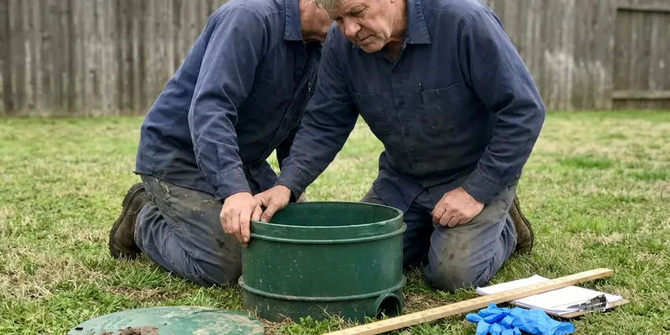

Gas Water Heater Repair in El Paso, TX
When your gas water heater acts up in El Paso, TX, you need a fast and reliable repair. DFJ Plumbing provides quick, expert service to restore your hot water.
- Fast Gas Heater Repair
- Licensed Texas Plumbers
- Upfront Pricing
- Guaranteed Workmanship

Expert Gas Water Heater Service is Here in El Paso, TX.
Don't shiver through another cold shower, contact DFJ Plumbing for immediate assistance.
Expert Gas Water Heater Repair Services in El Paso, TX
DFJ Plumbing specializes in comprehensive gas water heater repair for homes across El Paso, TX. We understand the unique demands of Texas homes and the importance of a reliable hot water supply.
Our expertise includes:
- Diagnosing and repairing pilot light failures
- Fixing gas valve and thermostat malfunctions
- Addressing burner assembly and thermocouple issues

Additional Plumbing Repair Services in El Paso, TX
We offer expert plumbing repair services across El Paso, TX to fix leaks, restore flow, and keep your system running smoothly.




Professional septic tank repair, El Paso


Customers
Why Choose DFJ Plumbing for Gas Water Heater Repair in El Paso, TX?
We pride ourselves on transparent communication and reliable service, making sure you understand the problem and the solution before any work begins.
- Safety First, Gas appliances require careful handling to prevent leaks and carbon monoxide exposure.
- Local Expertise, We understand local El Paso plumbing codes and common issues affecting Texas water heaters.
- Long-Term Fixes, Our repairs focus on durability and efficiency, saving you money in the long run.
Citywide Coverage
From historic districts to new developments, our technicians are dispatched quickly across El Paso to address your gas water heater issues. We make sure our service reach covers all corners of the community for prompt repairs.
Experienced Team
Our team of licensed plumbers has extensive training and hands-on experience specifically with gas water heaters, including various brands and models common in Texas. They're equipped with the right tools and knowledge to handle complex gas line and combustion chamber repairs.
Safety-First Approach
Safety is paramount when working with natural gas appliances. All our gas water heater repairs in El Paso, TX are performed strictly according to Texas plumbing codes and manufacturer specifications, minimizing any risks to your home and family.
Trusted Certified El Paso Plumbing Services Professionals
At DFJ Plumbing, we take pride in providing licensed, certified plumbing services throughout El Paso, TX. Backed by leading industry credentials, our experienced plumbers combine technical skill with genuine customer care. Whether it is repair, installation, or maintenance, we follow strict safety and quality standards to deliver long-lasting results you can trust.
Call Us Now PHCC Plumbing Contractor Recognition
PHCC Plumbing Contractor Recognition Better Business Bureau (BBB) Accreditation
Better Business Bureau (BBB) Accreditation Angi Certified Pro
Angi Certified Pro ISO 9001 Quality Management Certification
ISO 9001 Quality Management CertificationDependable Gas Water Heater Repair Services in El Paso, TX
Pilot Light and Ignition System Repair in El Paso
A common culprit for no hot water in gas heaters is a faulty pilot light or ignition system. Our technicians are skilled at diagnosing issues like a dirty pilot tube, thermocouple failure, or a malfunctioning igniter. We carry common replacement parts on our service vehicles to ensure a quick fix and restore your hot water supply promptly.

Gas Valve and Thermostat Repair in El Paso, TX
Issues with the gas valve or thermostat can lead to inconsistent water temperatures or a complete lack of hot water. Our team can test these crucial components for proper operation, checking for electrical continuity and gas flow. If a part is defective, we'll replace it with a quality, manufacturer-approved component to ensure your water heater heats efficiently and safely.
Burner Assembly and Venting System Repair in El Paso
A malfunctioning burner assembly can result in insufficient heating or unusual noises. We meticulously inspect the burner for blockages, corrosion, or wear. Additionally, we check the venting system for proper draft and obstructions, which is vital for safe operation and preventing carbon monoxide buildup in your El Paso home. Proper venting is a critical safety consideration.
Water Heater Tank Leaks and Pressure Issues in El Paso, TX
While gas water heaters are robust, tank leaks or pressure problems can occur. We can often patch small leaks or replace relief valves if pressure is too high. However, if the tank itself is compromised due to rust or old age, a replacement might be the more economical long-term solution. We'll provide an honest assessment of the repair viability for your El Paso, TX home.
Emergency Gas Water Heater Repair in El Paso
When your gas water heater suddenly stops working, especially during a Texas cold snap, it's an emergency. DFJ Plumbing offers prompt emergency repair services for gas water heaters in El Paso. We prioritize urgent calls to get your hot water back quickly, understanding that a lack of hot water is more than just an inconvenience.
Commercial Gas Water Heater Repair in El Paso, TX
Businesses in El Paso, TX rely on a constant supply of hot water for their operations. Our team is equipped to handle the larger, more complex gas water heater systems found in commercial settings. We understand the need for minimal downtime and provide efficient, durable repairs to keep your business running smoothly.
All Major Gas Water Heater Brands Serviced in El Paso
Whether you have a Rheem, Bradford White, A.O. Smith, or another major brand of gas water heater, our technicians are trained to service them all. We have access to a wide range of parts and the specific diagnostic tools needed for various models, ensuring your repair is done correctly the first time, regardless of the brand.

Cost-Effective Gas Water Heater Solutions in El Paso, TX
We always aim to provide the most cost-effective repair solution for your gas water heater in El Paso, TX. We give transparent pricing before any work begins, so you know exactly what to expect. Sometimes, a repair can extend the life of your unit significantly, while other times, replacement is the more prudent financial decision. We'll help you make the best choice.
Gas Water Heater Repair Near Me in El Paso, TX
For reliable gas water heater repair near me in El Paso, TX, DFJ Plumbing is your trusted local expert. Our technicians are strategically located throughout the area, allowing for rapid response times when you need us most. We understand the specific plumbing challenges faced by Texas homeowners.
When you search for 'gas water heater repair near me', you want a company that's not only close but also highly skilled and reputable. DFJ Plumbing offers both, providing top-tier service right to your doorstep, ensuring your gas water heater issues are resolved efficiently.
DFJ Plumbing at a Glance
- Fully licensed plumbing team covering El Paso, TX
- Same-day appointments and 24/7 emergency response
- Clear written estimates, no hidden fees
- 4.9-star rated by 812+ Texas customers
El Paso Map
El Paso Information
- Population
- 678,958
- Area codes
- 915/432/575
- Service area
- El Paso and communities within 40 miles
- Nearby
- Odessa, Midland, Lubbock, Amarillo
Given the occasional freezing temperatures and hard water in parts of Texas, a well-maintained gas water heater is crucial for consistent hot water and preventing costly damage in El Paso homes.
Expert Services
Trust our professionals for reliable DFJ Plumbing solutions in El Paso, TX.
Our Specialized Plumbing Services in El Paso, TX
At DFJ Plumbing, we provide a complete range of plumbing services across El Paso, TX. From leak detection to full system installations, our team ensures fast, precise, and affordable service for both residential and commercial properties. Explore our core services below:


How Our Gas Water Heater Repair Process Works in El Paso, TX
Our gas water heater repair process is designed to be straightforward and transparent, ensuring you get your hot water back with minimal hassle.
Request a Quote
Contact us at (737) 405-5978 to schedule your gas water heater repair. Our friendly staff will gather initial details and set up a convenient appointment time for a technician to visit your El Paso home.
Thorough Inspection
Our licensed plumber will arrive on time and conduct a detailed inspection of your gas water heater. They'll pinpoint the exact cause of the malfunction, checking all components from the gas line to the vent.
Clear Explanation & Repair
We'll explain the issue in plain language and provide an upfront quote for the repair. Once approved, our technician will proceed with the necessary repairs using quality parts and expert techniques.
Frequently Asked Questions About Gas Water Heater Repair in El Paso
The cost of gas water heater repair in El Paso, TX can vary widely depending on the issue. Minor repairs like a thermocouple replacement might range from $150-$350, while more complex issues such as a gas valve replacement could be $400-$800 or more. We always provide a detailed, upfront estimate after diagnosis.
Most common gas water heater repairs can be completed within 1 to 3 hours. However, more complex issues or if special parts need to be ordered could extend the timeline. We strive for efficiency without compromising safety or quality.
Look out for a lack of hot water, inconsistent water temperature, a pilot light that won't stay lit, unusual noises like rumbling or popping, a rotten egg smell (indicating a gas leak), or visible leaks around the tank. Any of these warrant a professional inspection.
Generally, minor repairs like replacing a thermocouple or a thermostat do not require a permit. However, if the repair involves significant alterations to the gas line or venting system, or if the unit needs to be replaced, a permit from the El Paso building department might be necessary. We handle all necessary permitting.
DFJ Plumbing stands behind our work with a comprehensive warranty on parts and labor for all gas water heater repairs. Specific warranty details will be provided at the time of service, giving you peace of mind for your investment in your El Paso, TX home.
If you smell gas, immediately evacuate your home, do not turn on or off any lights or appliances, and call your gas company's emergency line and then DFJ Plumbing from a safe location. This indicates a potentially dangerous gas leak that requires immediate professional attention.
Regular maintenance, such as annual flushing of the tank to remove sediment, inspecting the anode rod, and checking the pressure relief valve, can significantly extend the life of your gas water heater and prevent common issues. Consider a maintenance plan with DFJ Plumbing.
A thermocouple is a safety device in a gas water heater that senses if the pilot light is lit. If it doesn't detect heat, it shuts off the gas supply to prevent gas leaks. A faulty thermocouple is a very common reason for a pilot light not staying lit and is a critical safety component.
What People Are Saying About Our Plumbing Experts?

Daniel K.
A pipe burst at 11 pm and they actually answered. The plumber showed up within the hour, shut everything down, and had us back to normal the next morning. Could not ask for more.
Emergency Plumbing · Lubbock, TX
James P.
Our commercial plumbing system had a leak under the sink, and DFJ Plumbing handled it professionally. The plumbers arrived quickly and restored everything without disruption to our customers.
Commercial Plumbing · Amarillo, TXRobert G.
The trenchless sewer replacement saved our front yard. They walked us through the camera inspection footage first so we knew exactly what we were paying for.
Sewer Line Replacement · San Angelo, TX
Mark T.
When our office needed drain cleaning, DFJ Plumbing provided quick, reliable service. The plumber arrived on time and made sure every drain flowed perfectly before leaving. Very satisfied.
Drain Cleaning · Abilene, TX
Patricia H.
We had a slab leak that two other companies could not find. DFJ Plumbing located it in under an hour, explained our options, and the price matched the quote to the dollar.
Slab Leak Repair · Amarillo, TX
Sofia M.
Two new toilets installed in one visit, no mess left behind, and the tech even adjusted a faucet he noticed was dripping. Fair pricing and really friendly.
Toilet Installation · Lubbock, TX